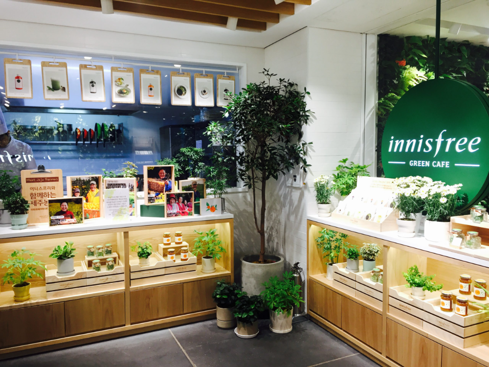

About Seoul
Seoul the capital of South Korea (the Republic of Korea). It is located on the Han River in the northwestern part of the country, with the city centre some 37 miles (60 km) inland from the Yellow Sea (west). Seoul is the cultural, economic, and political centre of South Korea. Officially the Seoul Special City, is the capital and largest metropolis of South Korea.The current population of the Republic of Korea is 51,307,257 as of Thursday, May 13, 2021, based on Worldometer elaboration of the latest United Nations data.
Location: In the center of the Korean Peninsula near the West Coast.
Topography: Seoul is a city surrounded by mountains 700-800 meters high. Namsan (Mount Nam) is situated in the center of the city home to the popular N Seoul Tower, one of the main tourist attractions in Seoul. The Han River flows across the city from East to West dividing the city into two main areas: North of the River and South of the River.
Population: 10,464,051
Area: 605.25 km2 (233.69 sq mi.) Second largest metropolitan area in the world after Tokyo, with over 25 million inhabitants.
Language: Korean (Major tourist attractions offer language services in English, Japanese and Chinese).
Religion: Christianity 25%, Buddhism 25%, Minor religios groups include confucianism and others.
Climate: Four distinctive seasons: Cold and dry winters, hot and humid summers and rather clear and dry spring and fall.
History
Dates back to approxiamtely 2,ooo years ago. founded as a capital of a unified nation in 1394 by Gen. Yi Song-gye founder of Choson dynasty. Was first called Hanseong and renamed in 19945 after Korea recieved independence after world war II
Over half of Korea's population is living in Seoul greater metropolitan area - the capital of South Korea and center of politics, finance, culture and creativity
Seoul is divided by the Han River and surrounded by stony-crested mountains and harsh, yet beautiful landscapes.
With the foundation of the Joseon Dynasty in 1394, Seoul became the capital city.
Seoul acquired its name after Korea was liberated from colonial reign on August 15th, 1945.
In 1946, Seoul was re-affirmed as the capital city when the Republic of Korea was founded.
Facts About the City
World's fastest average connection speed
As of 2017, Seoul had the fastest average internet connection in the world at 28.6 Mbit/s, according to the report State of the Internet published by Akamai Technologies. South Korea's speed is four times faster than the world average of 7.0 Mbit/s.
Taekwondo is a national sport
The South Korean National Assembly has passed legislation giving taekwondo flagbearing national sport status in the country.Taekwondo is a Korean martial art and the national sport of South Korea. Taekwondo is also used by the South Korean military as part of its training.
Celebration for babies 100 days after birth
In Korean culture, the 100th day after a child's birth is a significant milestone. Unfortunately it was common back in the day for babies to pass away due to sickness and poor living conditions, so the 100th day is celebrated for having survived this difficult period.Every birthday is special and well celebrated in Korea, but some milestones hold greater significance than others. In modern day Korea, “Dol” is one of the best-known birthday celebrations in which a party is thrown when the child reaches one year old. These parties are becoming more and more lavish and the first birthday, or "Doljanchi", is now an event where affluent parents in one of the world's biggest economies flaunt their wealth. Another important and celebrated day in the life of a Korean infant is “Baek-il”, and is held on the 100th day after the child’s birth. In 2015 Korea, “Baek-il” carries less significance than “Dol”, but a look back into Korea’s past reveals that this was not always the case.
Capital of south Korea
Seoul, officially the Seoul Special Metropolitan City, is the capital and largest metropolis of the Republic of Korea (commonly known as South Korea). Seoul is the world's 16th largest city, and forms the heart of the Seoul Capital Area, which includes the surrounding Incheon metropolis and Gyeonggi province.
Famous for kpop or k Culture
If you’re in Korea, especially in Seoul, there are more opportunities to dive into the real K-pop world.Meeting K-pop stars on their way to the pre-recording of Music Bank has become quite a culture in Korea and you can also be a part of this on our Seoul K-pop Tour.Seoul is dedicated to becoming the world’s leading exporter of popular culture. It is a way for Korea to develop its “soft power”.
It’s heaven for tech junkies
Digital addicts will be relieved to know they’ll never have to wait too long for their internet fix in South Korea. The country was judged to have the world’s fastest internet connection speed for the 12th consecutive quarter last year, according to Akamai - the content delivery network (CDN) responsible for serving between 15 and 30 per cent of all web traffic.It is also reported to have the best 4G availability in the world, with users able to expect a signal 95.71 per cent of the time.
It is home to one of the world’s best airports
Incheon International Airport was named the world’s best for the 12th year running at last year’s Airport Service Quality Awards.It also ranked third best in last year’s World Airport Awards.
It has a world-beating food scene
Korean food has been making waves across the globe, with kimchi, among other dishes, popping up on restaurant menus everywhere. It received the official haute cuisine stamp of approval in 2016 when the Michelin Guide launched its first Seoul edition, and there are now 24 Michelin-starred restaurants.
Places to visit and things to do in Seoul
Find & Book the Best Things to Do in Seoul. Tours, Activities, Excursions & More in Seoul.
RESTURANTS AND CAFES
Innisfree GREEN CAFE
Beansbins Myeongdong O'sulloc Tea House Insadong Store Blind Spot
Blind Spot
 Flavors
Privilege Bar
Flavors
Privilege Bar
 Cleo
Cleo